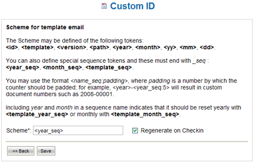

Custom ID |
LogicalDOC allows you to set a custom ID with a configurable schema on
a document. In the Custom ID menu pages you can define the schema
that will be associated to a template. In particular, by default, in
LogicalDOC the default template has the schema
<id>; whereas the
email template has an empty schema.
Picture 52: Custom ID
By clicking on the icon is 3.5 you can see the schema edit page. There is an explanation of the tokens that can be used to compose the schema. Using the checkbox Regenerate on Checkin you can ask LogicalDOC to regenerate the custom ID of a document on which you have done the check-in operation.

Picture 53: Schema edit page